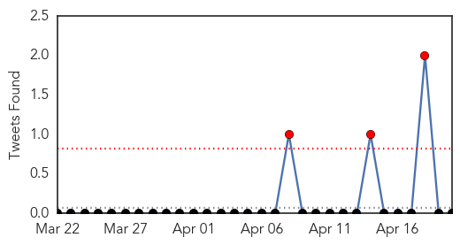
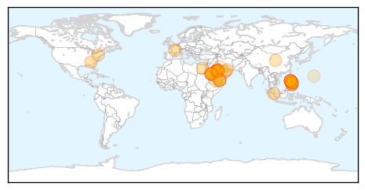
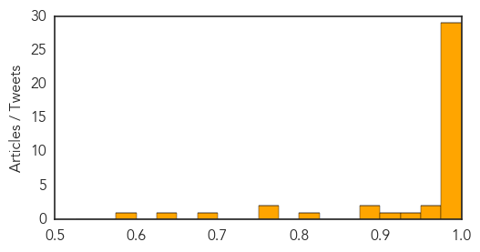

Toggle navigation
Early Warning
Daily Alerts
Middle East Respiratory Syndrome
Apr 20, 2014
Compare to:
-
Dengue Fever
Hemmorhagic Fever
Mold/Fungal Infection
Influenza
Meningitis
Pertussis / Whooping Cough
Cholera
Hepatitis
Chikungunya
Yellow Fever
Bubonic Plague
West Nile Virus
Swine Flu
Ebola
Measles
Unknown
Mumps
30 Day Trends
Web: 10
alerts
, 0
warnings
Twitter: 3
alerts
, 0
warnings
Top Articles:
1.000
Virus expert says MERS infection prevention, control has "broken down" in Saudi Arabia
1.000
SARS-Like MERS Virus Spreads Among Health Care Workers
0.999
Mers: WHO confirms 2 new cases in UAE
0.999
Mers: WHO confirms 2 new cases in UAE
0.999
Saudi Health Ministry confirms 7 new cases of MERS
0.999
Filipino tests negative for Middle East virus
0.999
What do you need to know about MERS-CoV? DOH lists symptoms, treatment, prevention
0.999
Farsnews
0.998
Philippines on MERS alert: Officials
0.998
Spate of Mideast virus infections raises concerns
0.998
Saudi Arabia announces jump in new cases of deadly MERS virus
0.998
Jump in new MERS cases in Saudi Arabia
0.998
More of MERS Trouble in Saudi Arabia
0.998
Search for Etihad passengers launched
0.997
Saudi Arabia announces jump in new MERS cases
0.997
Saudi Arabia announces jump in new cases of deadly MERS virus
0.997
Saudi Arabia announces jump in new cases of deadly MERS virus
0.997
Health ministry confirms probability of MERS in Egypt
0.995
More MERS cases in Saudi Arabia, UAE
0.994
Health D-G: No new MERS-CoV cases detected
0.994
Saudi reports surge in Mers infection cases
0.994
Middle East respiratory syndrome coronavirus (MERS-CoV) update: Greece reports first case
0.993
Batangas monitoring 3 suspected MERS-CoV cases
0.992
Saudi Arabia: Seven new MERS cases
0.989
DOH expects all Etihad passengers to test negative for MERS-CoV
0.989
Palace renews appeal to plane passengers to test for MERS—CoV
0.983
Filipino nurse tests negative for MERS coronavirus: RITM
0.977
Philippines boosts MERS monitoring after UAE nurse scare
0.976
Three UAE Mers cases test negative: Haad
0.969
Malacanang asks Etihad passengers anew to undergo Mers-Cov test
0.956
MERS strikes 13 more
0.936
18 Ilonggos in Mers-Cov virus watch
0.909
PNP helps locate co-passengers of OFW diagnosed with MERS-CoV
0.890
Valley farmers keep eye out for deadly pig virus
0.878
USDA orders farms to report pig virus infections
0.817
PNP seeking co-passengers of OFW with MERS-COV finding
0.772
Mers virus: Saudi seeks foreign firm's help - Emirates 24
0.771
PNP tracking OFW’s co-passengers
0.696
Etihad Airlines passengers who have yet to test for MERS-CoV
0.639
KUNA : No new Coronavirus cases reported in Kuwait -- Health Min
0.581
Ministry denies rumors of AIDS patient release - Kuwait Times
Top Tweets:
No tweets found for Apr 20, 2014
Web/News Articles
Tweets

Article Locations

Article Confidences
